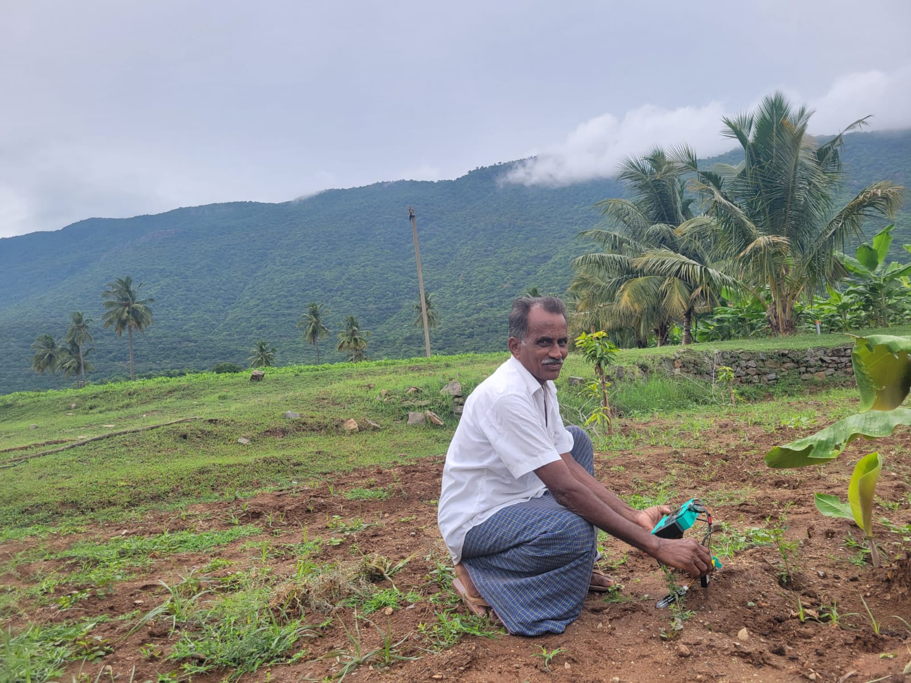
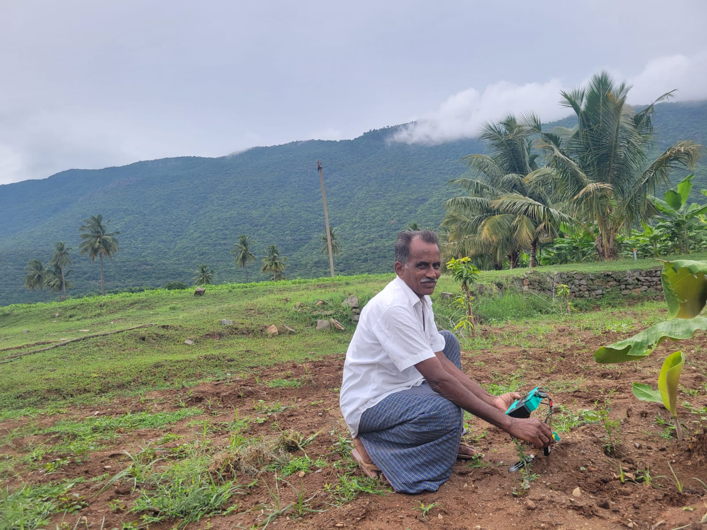

The Research
Our research focuses on optimizing tillage practices through machine learning, aiming to reduce soil erosion, enhance carbon retention, and improve crop yield. Utilizing CNN-based models, we assess tillage intensity, timing, and fertilizer quantities.


 
